Dish photo credits
Hampi Tiffin House is a made-up restaurant on a sample menu. The dish photos are illustrative stand-ins from Wikimedia Commons, used under the licences below and resized to thumbnails. They are not photos of this restaurant’s food. Click a title for the original file and full licence.
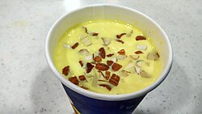
Badam milkA cup of chilled Badam milk.jpg by Thamizhpparithi Maari, CC BY-SA 4.0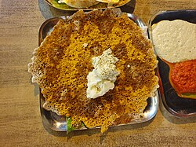
Benne dosaDavanagere Benne Dosa.jpg by Ravi Dwivedi, CC BY-SA 4.0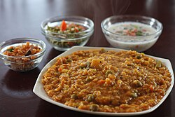
Bisi bele bathBisi Bele Bath (Bisibelebath).JPG by Food and Remedy, LLC, CC BY-SA 3.0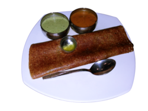
Butter masala dosaButter Masala Dosa.png by Sameer.siddhanti, CC BY-SA 3.0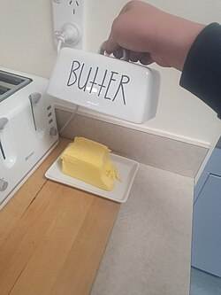
Butter (one cube)Block of butter in butter dish.jpg by Qwertyxp2000, CC BY 4.0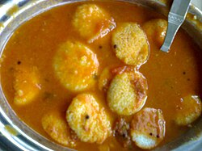
Button idli (fourteen)Button idli.JPG by Randhirreddy at English Wikipedia, CC BY-SA 3.0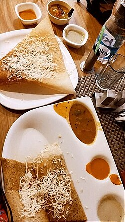
Cheese masala dosaCheese paneer dosa.jpg by Murale Vaishnavi, CC BY-SA 4.0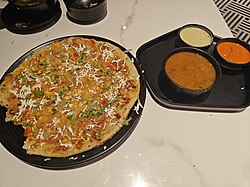
Cheese uttapamMixed uthappam at Marksmen, Hazratganj, Lucknow (2025-08-02).jpg by Contrapunctus-1, CC BY-SA 4.0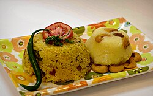
Chow chow bathChow chow bath ( khara bath & kesari bath ).jpg by Apoorva lakshmi, CC BY-SA 4.0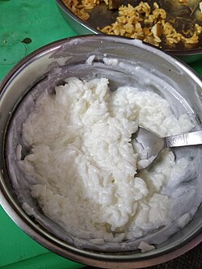
Curd (bowl)Plain Curd Rice.jpg by 5boi38, CC BY-SA 4.0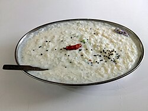
Curd riceCurd rice in ICH Bhopal.jpg by Suyash Dwivedi, CC BY-SA 4.0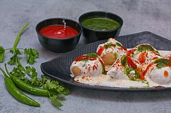
Dahi vadaOdia Style Dahi bara Puri Odisha-IMG 953.jpg by Subhransuphotography, CC BY-SA 4.0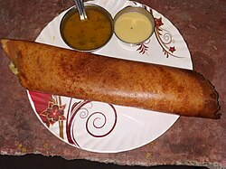
Extra chutneyButter Dosa served with coconut chutney and sambhar.jpg by Ravi Dwivedi, CC BY-SA 4.0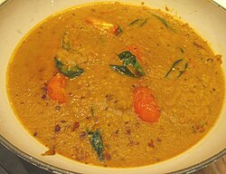
Extra sambarBoiled yellow lentil tomato ginger garlic.jpg by CNEcija12345, CC BY-SA 4.0 Filter coffeeIndian filter coffee in Dabarah.jpg by Unknown author, CC BY-SA 3.0
Filter coffeeIndian filter coffee in Dabarah.jpg by Unknown author, CC BY-SA 3.0 Fresh lime sodaFresh Lime.JPG by Siddhantsahni28, CC BY-SA 4.0
Fresh lime sodaFresh Lime.JPG by Siddhantsahni28, CC BY-SA 4.0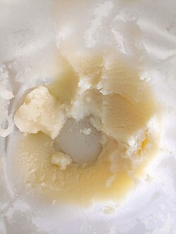
Ghee (one spoon)Ghee 2.jpg by Gaurav Dhwaj Khadka, CC BY-SA 4.0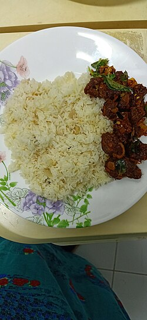
Ghee rice with veg kurmaGhee Rice and Beef Kondattam.jpg by Ayshamarjana, CC BY-SA 4.0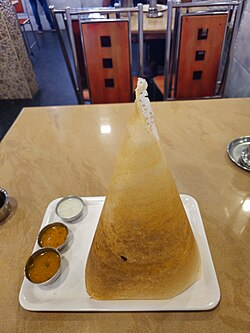
Ghee roast dosaGhee roast 05.jpg by Vis M, CC BY-SA 4.0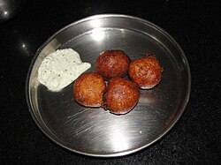
Goli bajeGoli baje or Mangalore bajji.jpg by Rayabhari, CC BY-SA 3.0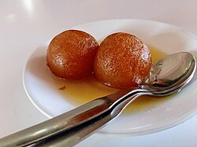
Gulab jamun (two)Two Gulab Jamun in a plate 01.jpg by Suyash.dwivedi, CC BY-SA 4.0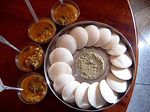
Idli (two)Idli Sambar.JPG by Soumya dey at English Wikipedia, CC BY-SA 3.0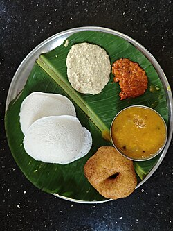
Idli–vada comboIdli vada (Tirupati, Andrapradesh).jpg by ChiK, CC BY-SA 4.0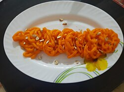
JalebiJalebi PK013.jpg by PallaviKhale, CC BY-SA 4.0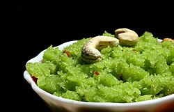
Kesari bathKesari bhath.jpg by AntanO, CC BY-SA 4.0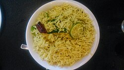
Lemon riceLemon Rice in Kerala.jpg by Ganesh Gore, CC BY-SA 4.0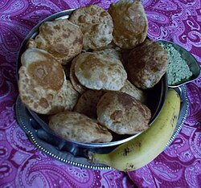
Mangalore bunsBanana puri.jpg by Vidya pmysore, CC BY-SA 4.0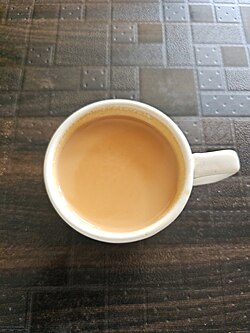
Masala chaiMasala Chai.jpg by Ganesh Mohan T, CC BY-SA 4.0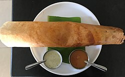
Masala dosaMasala dosa 01.jpg by Marajozkee, CC BY-SA 4.0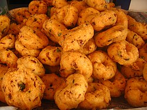
Medu vada (two)ഉഴുന്നുവടകൾ.JPG by Sugeesh at ml.wikipedia, CC BY-SA 3.0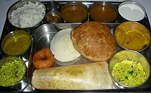
Mini mealsSouth Indian Thali Cropped.jpg by Tracy Hunter, CC BY 2.0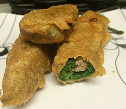
Mirchi bajjiStuffed mirchi bajji (16164286908).jpg by balu from fremont, ca, usa, CC BY 2.0 Mixed veg uttapamMixed uthappam at Marksmen, Hazratganj, Lucknow (2025-08-02).jpg by Contrapunctus-1, CC BY-SA 4.0
Mixed veg uttapamMixed uthappam at Marksmen, Hazratganj, Lucknow (2025-08-02).jpg by Contrapunctus-1, CC BY-SA 4.0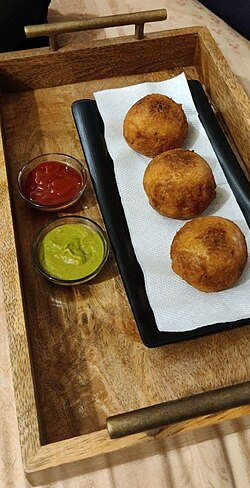
Mysore bonda (four)Aloo Bonda 1.jpg by లలిత వూరకరణం, CC BY-SA 4.0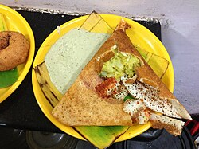
Mysore masala dosaMysore masala dosa in Mysuru, July 2013.jpg by Sunnya343, CC BY-SA 4.0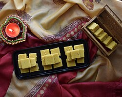
Mysore pak (two pieces)Ghee Mysore Pak.jpg by Vaidehi Pujary, CC BY-SA 4.0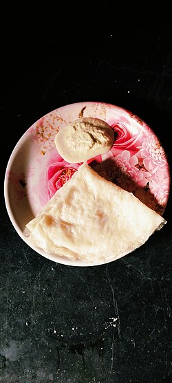
Neer dosa (three)Neer Dosa( Neer Tellavu).jpg by Yakshitha, CC BY-SA 4.0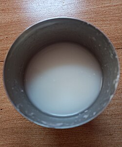
Neer majjige (spiced buttermilk)Buttermilk glass (cropped).jpg by Dr. Satish Upalkar, CC BY-SA 4.0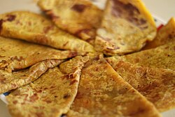
Obbattu (holige)Obbattu.jpg by GaneshDatta (talk) (Uploads), CC BY 3.0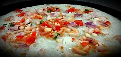
Onion tomato uttapamOnion-Tomato Uttapam.jpg by Nish1892, CC BY-SA 4.0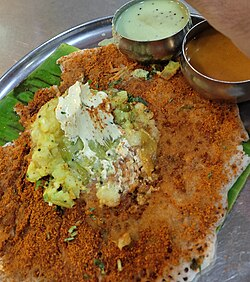
Open butter masala dosaOpen butter masale dose.jpg by Gangaasoonu, CC BY-SA 4.0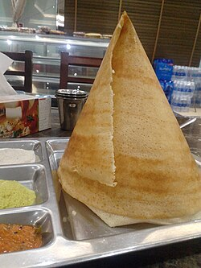
Paper dosa (family size)Dosa 4.jpg by Sri Namagiri Mahalakshmi Baskaran, CC BY 3.0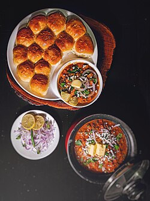
Pav bhajiBhaji pav 2.jpg by BHAAGIi, CC BY-SA 4.0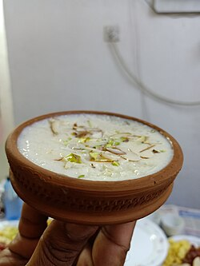
PayasamKheer (Payasam).jpg by Ayshamarjana, CC BY-SA 4.0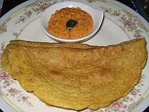
PesarattuPesarattu.jpg by Ryallabandi at en.wikipedia, CC BY-SA 3.0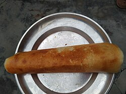
Plain dosaPlain Dosa from North India.jpg by Libreravi, CC BY-SA 4.0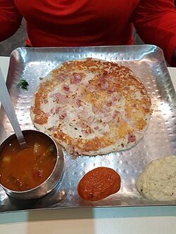
Plain uttapamUthappam with chutney.jpg by Amol Sinha, CC BY-SA 4.0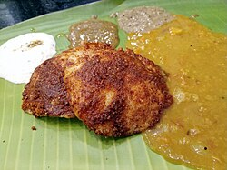
Podi ghee idliGhee Podi Idli - Murugan Idli Shop, Chennai - TamilNadu - PXL0246.jpg by Harikrishnan N, CC BY-SA 4.0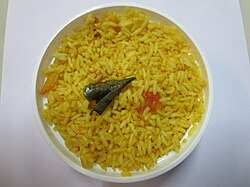
Puliyogare (tamarind rice)LEMON PULIHORA.JPG by Mkr.lines, CC BY-SA 4.0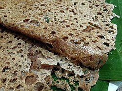
Ragi dosaRagi Dosa Mumbai.jpg by Pradeep717, CC BY-SA 4.0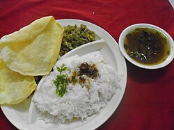
Rasam riceMidday meals with rasam,pappad,plantain shaft fry and cooked rice.JPG by V.S.Pooja, CC BY-SA 4.0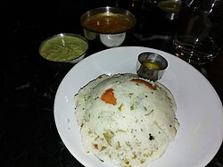
Rava idliMTR Rava Idli.jpg by Maharana7573, CC BY-SA 4.0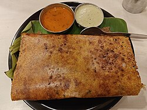
Rava onion dosaRava onion masala dosa at Udupi Upahar, Wilson Garden, Bangalore (2025-09-19).jpg by Contrapunctus-1, CC BY-SA 4.0 Rose milkRose milk ice cream with candied pistachios.jpg by Bhuvana Meenakshi, CC BY-SA 4.0
Rose milkRose milk ice cream with candied pistachios.jpg by Bhuvana Meenakshi, CC BY-SA 4.0- Sambar idli (two)Idli Sambar-Noida-UP-SP004.jpg by Sutapa Pal, CC BY-SA 4.0
- Sambar vada (two)COMBO OF SAMBAR VADA WITH GULAB JAMUN.jpg by Trishahitk2012, CC BY-SA 4.0
- Seasonal fresh juiceOrange juice 1 edit1.jpg by Agency of the United States Department of Agriculture Edited Version by: Arad, Public domain
- Set dosa (three)SouthIndianDosas.jpg by Amar Nath Adak, CC BY-SA 4.0
- South Indian meals on a banana leafSouth indian meals 24.jpg by Swathi sri srinivasa raghavan, CC0
- Special thali (unlimited)Thali with special taste.JPG by babinbubun, CC BY-SA 4.0
- Spring dosaHyderabadi Spring Dosa - Bajrang Dosa - Jamnagar, Gujarat.jpg by Mon!l1991, CC BY-SA 4.0
- Tender coconutCoconuts - single and cracked open.jpg by Ivar Leidus, CC BY-SA 4.0
- Thatte idliThatte Idli (2).jpg by solarisgirl from pune, india, CC BY-SA 2.0
- Tomato riceParboiled rice with chicken, peppers, cucurbita, peas and tomato.jpg by Petar Milošević, CC BY-SA 4.0
 UpmaUpma South India.JPG by Intodustin, CC BY-SA 4.0
UpmaUpma South India.JPG by Intodustin, CC BY-SA 4.0 Vangi bathVaanghi Baath.jpg by Sherin, CC BY-SA 4.0
Vangi bathVaanghi Baath.jpg by Sherin, CC BY-SA 4.0


.JPG){kind=link}


.jpg){kind=link}
.jpg){kind=link}


.jpg){kind=link}


.jpg){kind=link}


.jpg){kind=link}
.jpg){kind=link}


.jpg){kind=link}


.jpg){kind=link}


.jpg){kind=link}